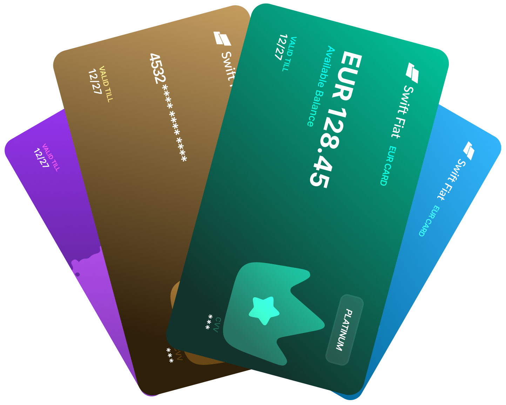
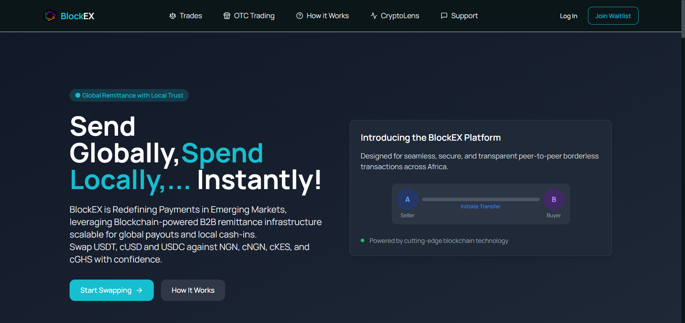
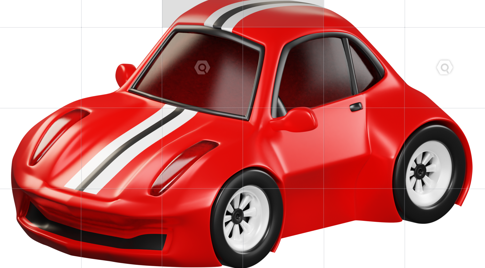
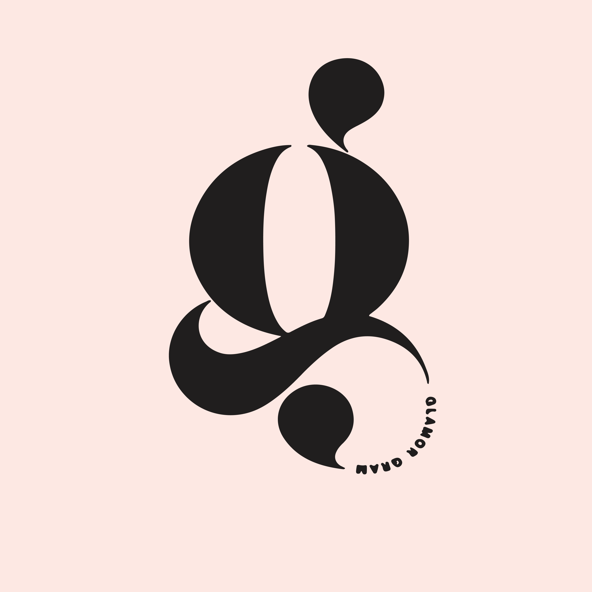
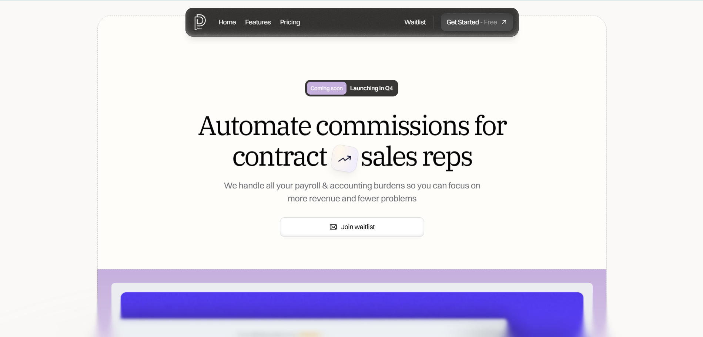

Every project below went to production or store review. Where something is under NDA I have said so and given the measurement instead of the repository.
Lead Mobile Developer · Swiift Fintech · Jun 2025 to Jan 2026 · Live on both stores
An everyday crypto wallet that does not make you think about blockchains. Buy, spend, save,
send, pay bills, and generate a virtual debit card in the same session. The hard part was not
the crypto. It was keeping wallet state consistent on Lagos mobile data, where a request can
hang for nine seconds and then succeed.
I led the build end to end and ran both store submissions. Reworking onboarding and the
multi-currency funding flow is what moved retention.
React Native · Expo · Redux Toolkit · TypeScript · crypto rails · REST

- 99.2%
- crash-free sessions
- +25%
- active user retention after the onboarding rewrite
- <2s
- median transaction confirmation
Full-Stack Engineer · Blockspace Technologies · Nov 2024 to Apr 2025 · Public repository
A B2B exchange and remittance desk settling across four currencies. I built the trading
frontend and the whole serverless backend on Supabase Edge Functions, which meant the order
book, the settlement routines, and the auth all had to survive without a long-lived server.
The WebSocket layer was the expensive lesson. The first version leaked subscriptions on every
symbol switch. Rewriting the broadcast fan-out cut client memory by roughly two thirds.
React · Next.js · Supabase · Edge Functions · WebSocket · Tailwind

- $70K+
- settled per month
- 99.9%
- uptime across 10k+ monthly transactions
- −68%
- client memory after the WebSocket refactor
Mobile & Systems Engineer · Tsaron Technologies · Nov 2023 to Aug 2024 · Under NDA
Native Kotlin insurtech telematics. The app listens for the acoustic signature of a driver
using a phone at the wheel and fuses that with motion sensor data, then assembles a
tamper-evident packet for accident reconstruction and automated subrogation claims.
Running digital signal processing on a mid-range Android without cooking the battery is a
real constraint. Most of the work was narrowing the false positive band: a passenger's phone,
a radio advert, a pothole.
Kotlin · Android native · DSP · sensor fusion · FNOL automation
- −60%
- false-positive distraction alerts after DSP retuning
- Auto
- First Notice of Loss generated from telemetry
Mobile Developer · Aug 2025 to Nov 2025 · Live
On-demand chauffeur, emergency transport and logistics dispatch. I came in to fix a slow,
crashing app. Map clustering, a state refactor, and moving location subscriptions off the
render path did most of it.
React Native · TypeScript · Firebase · Google Maps · push

- −40%
- crash rate
- −35%
- cold start time
- +20%
- daily active users after live tracking shipped
Mobile Engineer · 2026 · Live on both stores
Scheduling and payments for salon owners. Beauty services have variable durations, so the
interesting problem was slot conflict resolution: a two-hour colour treatment and a
twenty-minute trim cannot be modelled on the same grid.
Stripe collection happens at booking, which is what actually reduced no-shows.
React Native · Expo · TypeScript · Redux · Stripe

- iOS + Android
- shipped from one codebase
- In-app
- deposit capture at time of booking
Frontend Engineer · ItsPaydai · Feb 2023 to Sep 2023 · Completed
Multi-tier sales commission reconciliation with automated Stripe and PayPal batch payouts.
Sales reps watch their commission land over a WebSocket channel instead of emailing finance
to ask.
React · TypeScript · Redux · Stripe · PayPal · WebSockets

- −75%
- payment processing time
- Full
- ledger auditability on every disbursement